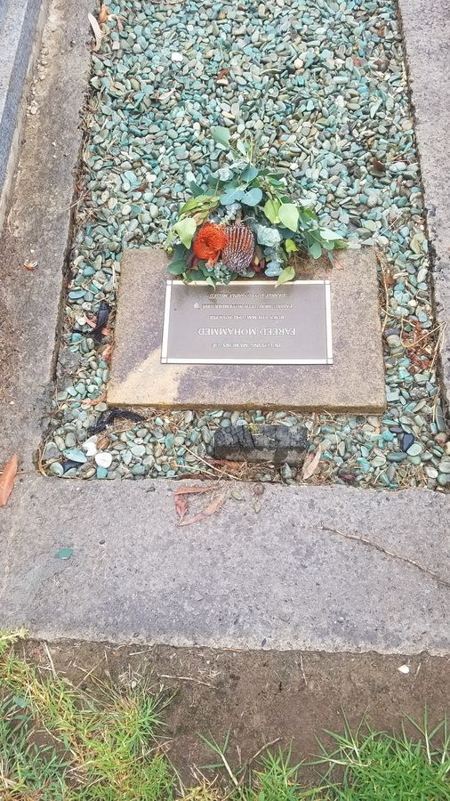

The Golden Years
It's fifty years and a bit now since Nuran and I tied the proverbial knot and since then we've been tying each other up in knots. It hasn't been all
plain sailing in calm seas but then that only happens in Monasteries not the real world and the good times and experiences have outnumbered the bad
so the fact we have stayed together should not be that surprising to those in the know.
The occasion was cause for a celebration and thankfully Covid restrictions eased in Melbourne in time and we could celebrate our joy with our boys.
When Melbourne starts coming to life it's a great city for a celebration and no one does Chinese dining better than the Chinese on Little Bourke Street.
Being handy in the city to our Hotel and just a tram ride down Bourke St it was fitting venue for our party and the restaurant recommended by Bill turned out to be very good.
So here we all are at the Teahouse in Chinatown, Cohen Place, Melbourne enjoying our banquet and beverages.

Afterwards we caught the end of the Essendon v Hawthorn game in a bar and raucously enjoyed the stirring comeback by the Hawks. A great night out.
The following day was ours to enjoy by ourselves in Covid free Melbourne( at last) and we journeyed to the wilds of Springvale to visit Fareed's grave in the cemetery there.
Ours was a dual wedding he and Bhabi and Nuran and I, so in a way it was his golden wedding anniversary too. 

Then it was lunch at John's favourite Chinese restaurant in nearby Glen Waverley, the Ocean King. This was where Nuran had said" I can copy their duck recipe " and , not only did she achieve that , but made it better as the years have gone by so now that is one of her specialities. Duck Marinade but anyway I digress from the tale of the day. So ....
After lunch it was a leisurely drive down the Monash Freeway, that's an oxymoron as its never leisurely on that road, back to the hotel.
A wash and brush up and a trip to Bourke street by me on the tram to buy Nuran's birthday gift at David Jones all goals duly accomplished it was another trip on the tram to Little Bourke St and tea at a more down market Chinese restaurant than our celebratory dinner. It was still a lovely meal and here we are being happy together.


Now its back to Tarpeena and the lawns need cutting , the dogs walking and it all seems a while ago but the memories remain.
29.03.21